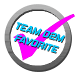

Quasimoto.

Amount of Players: 4+
Difficulty: 4/7
Drunk Scale: ~5.5/7
A drunken twist on the popular game kings.
| 1. | Place four empty solo cups in the shape of a square in the middle of the table and fill them 1/4th of the way with beer. |
| 2. | Similarly to Kings, proceed to place an entire deck of cards in a circular fashion around the four cups. |
| 3. | The game is played exactly how Kings is played, whereas each card's value has a specific meaning and only one player goes at a time. If you're confused about any of the Kings rules or have never played before, please refer to our Kings Rule Page. |
| 4. | Here's the twist: No player is prohibited from the following: Cursing (profanity), Pointing (except for 7/Heaven), Say anyone's name or say "Drink", "Drank" or "Drunk". |
| 5. | If a player is caught doing one of the actions mentioned above, they must take one of the cups from the table and finish it. Afterwards, they must put the cup back in it's original spot and fill the cup back up to 1/4th of the way with their own beer. |
| 6. | Here's the catch: If a player doesn't say "Quasimoto" before placing the cup back on the table, not only must they refill the cup with their own beer, but they must drink the the entirety of the cup's contents again and refill it. This can repeat an unlimited amount of times before the player finally remembers to say Quasimoto. |